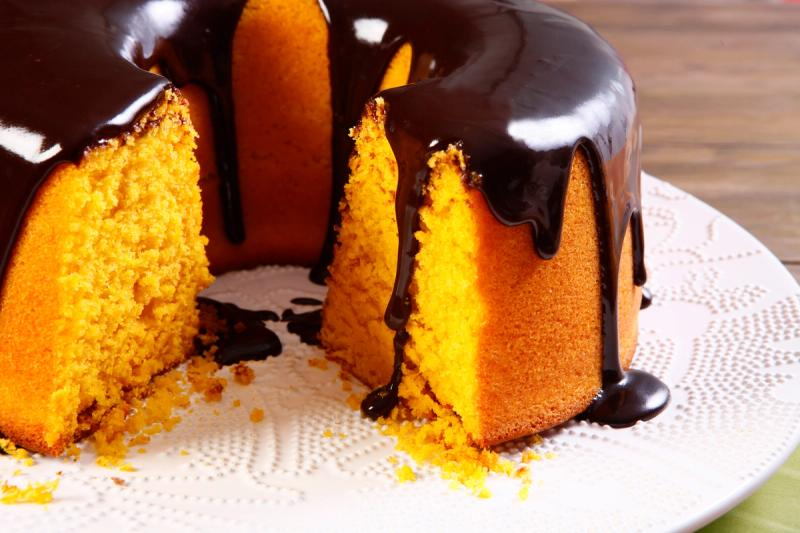
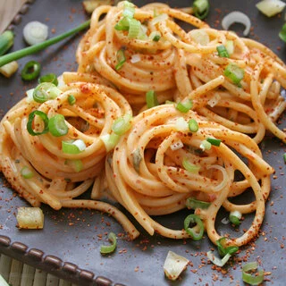

Bolo de Cenoura
- cenouras
- farinha
- leite
- ovos
Descasque e rale as cenouras. Misture os ingredientes secos em uma tigela. Adicione os ingredientes líquidos e as cenouras raladas à mistura. Misture tudo até obter uma massa homogênea. Despeje a massa em uma forma untada e enfarinhada. Asse o bolo no forno pré-aquecido até ficar dourado e faça o teste do palito para verificar o cozimento.
Macarrão Italiano
- 500g de farinha
- 5 ovos
- 100g de semolina
- 1 colher de azeite
Em uma tigela, misture 500g de farinha e 100g de semolina. Faça um buraco no centro da mistura e quebre 5 ovos nesse espaço. Adicione 1 colher de azeite aos ovos e comece a misturar gradualmente com a farinha. Continue amassando e incorporando até formar uma massa homogênea. Sove a massa por alguns minutos até ficar macia e elástica. Enrole a massa em plástico filme e deixe descansar por pelo menos 30 minutos antes de usar.
Panquecas

- 1 xícara de leite
- 1 ovo
- 2 xícaras de farinha
- 3 colheres de margarina
- 1 colher de fermento
Em uma tigela, misture 1 xícara de leite, 1 ovo e 3 colheres de margarina. Adicione 2 xícaras de farinha à mistura e mexa até formar uma massa homogênea. Acrescente 1 colher de fermento à massa e misture bem. Aqueça uma frigideira antiaderente em fogo médio. Despeje uma porção da massa na frigideira e espalhe para formar a panqueca. Cozinhe por alguns minutos de cada lado até que as panquecas fiquem douradas. Sirva com o acompanhamento de sua escolha.